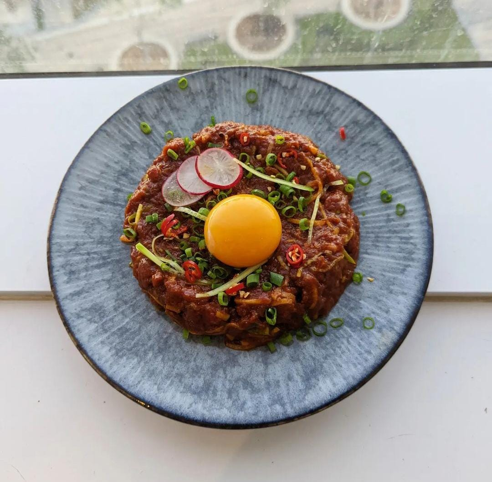

Korean Tartare

Description
Tartare is a dish that originates from France, commonly made of raw tenderloin, minced into small pieces, mixed in with capers, mustard, worcestershire, pickles, and topped with a raw egg.
This version uses Korean flavors, replacing the bold ones from mustard and pickles with apples and Korean chili paste. It's not traditional in any way but it's really good!
Ingredients
- 250g raw tenderloin
- 3 tbsp sesame oil
- 2 tbsp soy sauce
- 2 tbsp gochujang
- 3 tbsp honey
- 2 garlic cloves, finely minced
- 1 tbsp chili oil
- Half a green apple, julienned
- Half a cucumber, julienned
- 3 small radishes, julienned
- 1 spring onion, finely minced
- 1 egg yolk
Steps
- Chop the beef tenderloin into small pieces, almost into a mince, but not into a paste. This will take some strength.
- Add all the sauce ingredients into a bowl, starting from sesame oil to the chili oil, and mix them well.
- Mix the sauce in the beef, along with the julienned radishes, apples, and cucumber, and incorporate well.
- Plate in the center of a plate, and top with the raw egg yolk, some spring onion slices, and a spoon of chili oil.
- Serve with a side plate of rice, or on top of warm toasted sourdough bread.
- Enjoy!